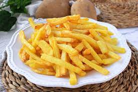

Patatas fritas
Receta patatas fritas casseras

Ingredientes
3 o 4 patatas fritas
4 dientes de ajo
aceite de oliva
sal
Elaboracion
calentar aceite en sarten
añadir las patatas cortadas, la sal y los ajos
freir al gusto
servir en plato